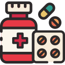

LACK OF WORKERS
Mainly due to poor working conditions and low wages.
Because of it, 85% of CHU report having had to temporarily
close beds due to staff shortages and 83% report being unable
to maintain a fulfilling personal life

SHORTAGE OF SUPPLIES
5,000 reports of stockouts, according to the National Agency for
Medicines Safety. In May 2026, the blockade of the Strait of Hormuz
sparked fears of a shortage of medical plastic products
(syringes, catheters, masks) and tensions remain.